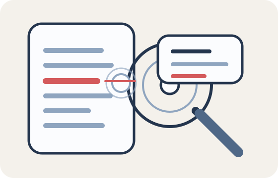
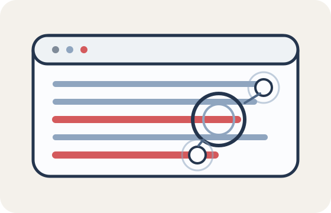
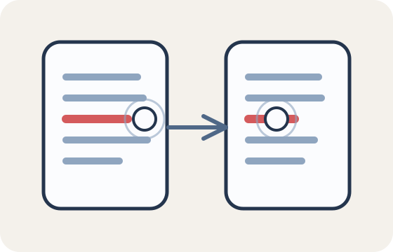
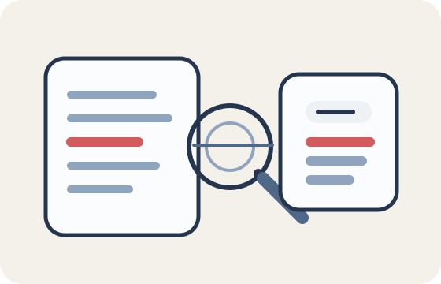
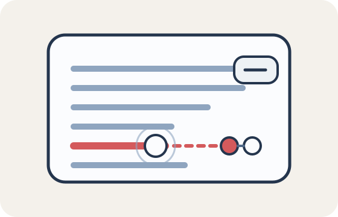

Documents are rectangular and readable.
Start with stacked rectangles, even spacing, and horizontal line groupings before adding any decorative treatment.
ScriptLens extends its document-and-lens mark into a calm visual system for transcript review, pattern detection, script comparison, clustering, and anomaly analysis. The visual grammar stays flat, geometric, and evidence-led.
The document, horizontal text lines, red highlight stroke, and blue magnifying handle become the core building blocks for every illustration and UI accent.
Every asset should read as structured analysis, not as a startup vignette or a generic corporate illustration. The composition should feel precise, quiet, and useful.
Start with stacked rectangles, even spacing, and horizontal line groupings before adding any decorative treatment.
Focus is shown with lens circles, ring overlays, and measured outlines instead of exaggerated motion or oversized shapes.
Use the red accent only for flagged lines, anomaly nodes, or comparison differences so it keeps semantic weight.
Scenes should mainly use documents, panels, lines, rings, and nodes. If a figure appears, keep it minimal and still.
Use aligned cards, clear gutters, and balanced whitespace. Avoid floating startup scenes or decorative chaos.
The same document blocks, lines, rounded frames, and highlight strokes should appear in marketing, product, and support surfaces.
The palette is intentionally restrained. Blue and gray carry structure, navy carries text and outlines, and red only appears when the system wants the user to notice evidence.
These scenes can be used in onboarding, empty states, product marketing, documentation, and UI explainer modules without breaking the identity system.

Hero or first-run state for core transcript review.

Use when explaining flagged lines or repeated structures.

Use for side-by-side transcript and revision views.
Use for grouped findings, themes, or evidence maps.

Use for summaries, takeaways, and downstream actions.

Use when the product calls out irregular phrasing or suspicious spikes.
Use rounded panels, evidence rows, restrained chips, and document-derived modules. The UI should support judgment instead of trying to entertain the user.
Verdict cards should foreground the score, the language of confidence, and the evidence summary before any secondary details.
Keep motion short, quiet, and utilitarian. The product should feel active enough to explain what it is doing without turning analysis into theater.
A narrow scan passes across text or document rows.
Inspection rings grow once, then settle.
Flagged strokes should animate as a short reveal.
Cluster links can draw in to show grouping.
Panels can stack or fan slightly to imply a change of state.
This system should make ScriptLens feel like a thoughtful analysis tool. It should not slide into noisy startup marketing or speculative AI imagery.
Those motifs are enough to cover inspection, review, comparison, and synthesis without inventing a second visual language.
The system should feel editorial and structured. Avoid hype imagery, chaotic shapes, or highly emotive characters.
If red appears everywhere, it stops functioning as evidence. Use it only when the product needs to call out a pattern or anomaly.